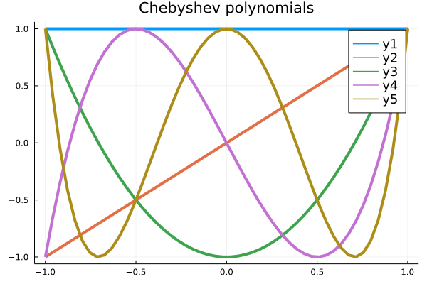
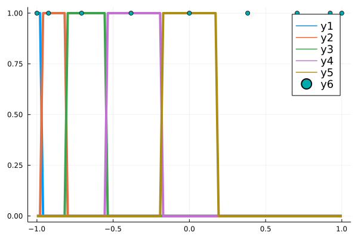
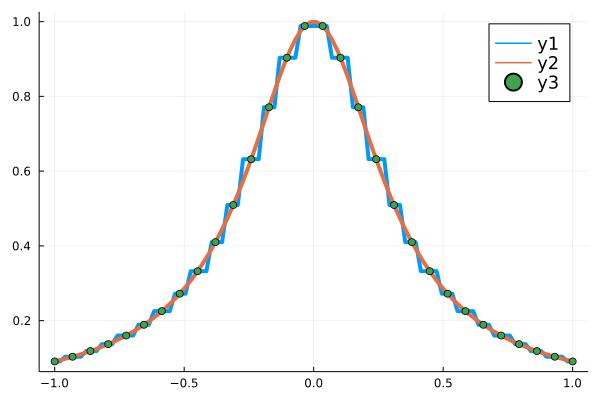
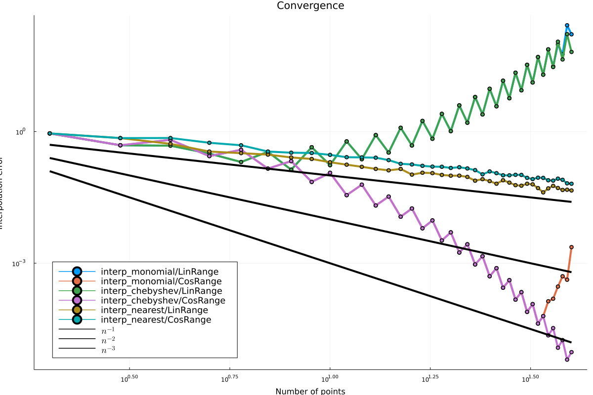

2022-03-07 Spline interpolation
Contents
2022-03-07 Spline interpolation¶
Last time¶
Runge phenomenon as ill conditioning
Stability and Chebyshev polynomials
Piecewise methods
Today¶
Accuracy of piecewise constant (nearest neighbor) interpolation
Piecewise polynomial methods
Splines
Libraries
using LinearAlgebra
using Plots
default(linewidth=4, legendfontsize=12)
function vander(x, k=nothing)
if isnothing(k)
k = length(x)
end
m = length(x)
V = ones(m, k)
for j in 2:k
V[:, j] = V[:, j-1] .* x
end
V
end
runge(x) = 1 / (1 + 10*x^2)
CosRange(a, b, n) = (a + b)/2 .+ (b - a)/2 * cos.(LinRange(-pi, 0, n))
vcond(mat, points, nmax) = [cond(mat(points(-1, 1, n))) for n in 2:nmax]
vcond (generic function with 1 method)
Chebyshev polynomials¶
\[\begin{split}\begin{split}
T_0(x) &= 1 \\
T_1(x) &= x \\
T_{n+1}(x) &= 2 x T_n(x) - T_{n-1}(x)
\end{split}\end{split}\]
function vander_chebyshev(x, n=nothing)
if isnothing(n)
n = length(x) # Square by default
end
m = length(x)
T = ones(m, n)
if n > 1
T[:, 2] = x
end
for k in 3:n
#T[:, k] = x .* T[:, k-1]
T[:, k] = 2 * x .* T[:,k-1] - T[:, k-2]
end
T
end
vander_chebyshev (generic function with 2 methods)
x = LinRange(-1, 1, 50)
plot(x, vander_chebyshev(x, 5), title="Chebyshev polynomials")

Chebyshev polynomials are well-conditioned¶
plot_vcond(mat, points) = plot!([
cond(mat(points(-1, 1, n)))
for n in 2:30], label="$mat/$points", marker=:auto, yscale=:log10)
plot(title="Vandermonde condition numbers", legend=:topleft, size=(1000, 600))
plot_vcond(vander, LinRange)
plot_vcond(vander, CosRange)
plot_vcond(vander_chebyshev, LinRange)
plot_vcond(vander_chebyshev, CosRange)

Lagrange interpolating polynomials revisited¶
Let’s re-examine the Lagrange polynomials as we vary the points.
x = CosRange(-1, 1, 9) # CosRange?
s = LinRange(-1, 1, 100)
A = vander_chebyshev(s, length(x)) /
vander_chebyshev(x)
@show cond(A)
plot(s, A[:,1:5], size=(1000, 600))
scatter!(x[1:5], ones(5), color=:black, label=nothing)
scatter!(x, zero(x), color=:black, label=nothing)
cond(A) = 3.388221057514254
Are there artifacts?
Piecewise interpolation¶
function interp_nearest(x, s)
A = zeros(length(s), length(x))
for (i, t) in enumerate(s)
loc = nothing
dist = Inf
for (j, u) in enumerate(x)
if abs(t - u) < dist
loc = j
dist = abs(t - u)
end
end
A[i, loc] = 1
end
A
end
interp_nearest(LinRange(-1, 1, 3), LinRange(0, 1, 4))
4×3 Matrix{Float64}:
0.0 1.0 0.0
0.0 1.0 0.0
0.0 0.0 1.0
0.0 0.0 1.0
A = interp_nearest(x, s)
plot(s, A[:, 1:5])
scatter!(x, ones(length(x)))

I don’t see any visual artifacts¶
x = LinRange(-1, 1, 30)
A = interp_nearest(x, s)
cond(A)
1.414213562373095
plot(s, A * runge.(x))
plot!(s, runge.(s))
scatter!(x, runge.(x))

function interp_chebyshev(x, xx)
vander_chebyshev(xx, length(x)) * inv(vander_chebyshev(x))
end
function interp_monomial(x, xx)
vander(xx, length(x)) * inv(vander(x))
end
function interp_error(ieval, x, xx, test)
"""Compute norm of interpolation error for function test
using method interp_and_eval from points x to points xx.
"""
A = ieval(x, xx)
y = test.(x)
yy = test.(xx)
norm(A * y - yy, Inf)
end
function plot_convergence(ievals, ptspaces; xscale=:log10, yscale=:log10, maxpts=40)
"""Plot convergence rates for an interpolation scheme applied
to a set of tests.
"""
xx = LinRange(-1, 1, 100)
ns = 2:maxpts
fig = plot(title="Convergence",
xlabel="Number of points",
ylabel="Interpolation error",
xscale=xscale,
yscale=yscale,
legend=:bottomleft,
size=(1200, 800))
for ieval in ievals
for ptspace in ptspaces
for test in [runge]
errors = [interp_error(ieval, ptspace(-1, 1, n), xx, test)
for n in ns]
plot!(ns, errors, marker=:circle, label="$ieval/$ptspace")
end
end
end
for k in [1, 2, 3]
plot!(ns, ns .^ (-1.0*k), color=:black, label="\$n^{-$k}\$")
end
fig
end
plot_convergence (generic function with 1 method)
So maybe it’s not that accurate?¶
plot_convergence([interp_monomial, interp_chebyshev, interp_nearest], [LinRange, CosRange])

How could we improve the accuracy?¶
Cubic splines¶
Piecewise cubic function
Continuous values
Continuous derivatives
function spline_interp_and_eval(x, s)
n = length(x)
function s_interp(y)
delta = x[2:end] - x[1:end-1] # diff(x)
Delta = diff(y)
T = zeros(n+1, n+1)
T[1,1] = 1
for i in 2:n-1
T[i, i-1:i+1] = [delta[i-1], 2*(delta[i-1] + delta[i]), delta[i]]
end
T[end,end] = 1
rhs = zeros(n+1)
rhs[2:end] = 3*(Delta[2:end] ./ delta[2:end] - Delta[1:end-1] ./ delta[1:end-1])
c = T \ rhs
S = zeros(n, 5)
S[:, 1] = x[1:end-1]
S[:, 3] = c[1:end-1]
S[:, 5] = y[1:end-1]
S[:, 2] = diff(c) ./ (3 * delta)
S[:, 4] = Delta ./ delta - delta/3 .* (2*c[1:end-1] + c[2:end])
S
end
function polyval(p, x)
f = p[1]
for c in p[2:end]
f = f * x + c
end
f
end
function s_eval(S, s)
f = zero(s)
for (i, t) in s
left = max(1, searchsortedfirst(S[:,1], t) - 1)
f[i] = polyval(S[left, 2:end], t - S[left, 1])
end
f
end
A = zeros(length(s), length(x))
aye = diagm(ones(length(x)))
@show size(A), size(aye)
for i in 1:length(x)
e = aye[:, i]
S = s_interp(e)
A[:, i] = s_eval(S, s)
end
A
end
A = spline_interp_and_eval(x, s)
(size(A), size(aye)) = ((100, 30), (30, 30))
DimensionMismatch("tried to assign 28 elements to 30 destinations")
Stacktrace:
[1] throw_setindex_mismatch(X::Vector{Float64}, I::Tuple{Int64})
@ Base ./indices.jl:191
[2] setindex_shape_check
@ ./indices.jl:245 [inlined]
[3] setindex!
@ ./array.jl:928 [inlined]
[4] (::var"#s_interp#27"{LinRange{Float64, Int64}, Int64})(y::Vector{Float64})
@ Main ./In[24]:13
[5] spline_interp_and_eval(x::LinRange{Float64, Int64}, s::LinRange{Float64, Int64})
@ Main ./In[24]:46
[6] top-level scope
@ In[24]:52
[7] eval
@ ./boot.jl:373 [inlined]
[8] include_string(mapexpr::typeof(REPL.softscope), mod::Module, code::String, filename::String)
@ Base ./loading.jl:1196
using Interpolations
x = LinRange(-1, 1, 14)
y = runge.(x)
flin = LinearInterpolation(x, y)
fspline = CubicSplineInterpolation(x, y)
plot([runge, t -> fspline(t)], xlims=(-1, 1))
scatter!(x, y)

xx = LinRange(-1, 1, 100)
norm(runge.(xx) - fspline.(xx))
0.01376551862282631